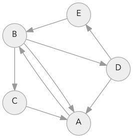

Содержание:
На этой страничке я покажу, каким образом я реализовал алгоритмы, описанные в основной статье: поиск в ширину, алгоритм Дейкстры, жадный поиск «лучший-первый», и A*. Я постарался не усложнять без надобности.
Большую часть кода, изложенного ниже, я объясняю. Недостающие части вы сможете найти в исходнике implementation.py.
1.1 Поиск в ширину
Начнем с реализации простого поиска в ширину на Python. В основной статье основной код алгоритма уже приведен, но нам нужно и описание обрабатываемого им графа. Вот абстракции, которые я использовал:
- Граф
- структура данных, хранящая непосредственных и удаленных соседей заданной локации (больше о графах в этой статье)
- Локация
- простое значение (число, строка, массив и т.п.) которое обозначает место в графе
- Поиск
- алгоритм, который берет граф, начало обхода, и (опционально) конец обхода, и высчитывает некоторую полезную информацию (посещенные узлы, указатели на предыдущие узлы, дистанцию) для некоторых или всех локаций
- Очередь
- структура данных, которую использует граф для упорядочивания обхода локаций
В основной статье я сосредоточился на алгоритмах поиска, здесь я опишу основные детали, необходимы для составления работающей программы. Начнем с графа:
class Graph: def __init__(self): self.edges = {} def neighbors(self, id): return self.edges[id]
Вот и все, что нам нужно. «А где же объект узла?»,— спросите вы. А я отвечу, что редко когда вообще им пользуюсь: по-моему гораздо проще использовать числа, строки в качестве локаций, и отдельный массив с хеш-таблицами, в котором локации используются в качестве индексов.
Обратите внимание, что грани графа направлены: то есть, мы можем иметь грань, идущую от A к B, но не иметь обратной грани. В игровых картах большинство переходов направлены в обе стороны, но бывают односторонние двери или уступы, с которых можно спрыгнуть — такие вещи и отображаются в графе односторонними переходами. Составим граф-пример, в котором локации обозначены буквами A-E.

Для каждой локации я составил список, с какими другими локациями она соединена:
example_graph = Graph() example_graph.edges = { 'A': ['B'], 'B': ['A', 'C', 'D'], 'C': ['A'], 'D': ['E', 'A'], 'E': ['B'] }
Прежде, чем использовать этот граф, мы должны составить очередь (queue):
import collections class Queue: def __init__(self): self.elements = collections.deque() def empty(self): return len(self.elements) == 0 def put(self, x): self.elements.append(x) def get(self): return self.elements.popleft()
Эта очередь служит простой оберткой для встроенного класса collections.deque. Вы можете использовать deque в вашем собственном коде совершенно свободно.
Теперь мы можем воспользоваться нашим графом и очередью в работе алгоритма посика в ширину:
def breadth_first_search(graph, start): frontier = Queue() frontier.put(start) visited = {} visited[start] = True while not frontier.empty(): current = frontier.get() print("Visiting %r" % current) for next in graph.neighbors(current): if next not in visited: frontier.put(next) visited[next] = True breadth_first_search(example_graph, 'A')
Visiting 'A' Visiting 'B' Visiting 'C' Visiting 'D' Visiting 'E'
Сетки тоже можно описать в виде графов. Я обозначу новый граф переменной SquareGrid, локации в котором представлены парами (int, int). Вместо того, чтобы хранить грани непосредственно, я буду вычислять их в функции neighbors (соседи).
class SquareGrid: def __init__(self, width, height): self.width = width self.height = height self.walls = [] def in_bounds(self, id): (x, y) = id return 0 <= x < self.width and 0 <= y < self.height def passable(self, id): return id not in self.walls def neighbors(self, id): (x, y) = id results = [(x+1, y), (x, y-1), (x-1, y), (x, y+1)] if (x + y) % 2 == 0: results.reverse() # aesthetics results = filter(self.in_bounds, results) results = filter(self.passable, results) return results
Для начала протестируем код с первой сеткой из основной статьи:
g = SquareGrid(30, 15) g.walls = DIAGRAM1_WALLS # long list, [(21, 0), (21, 2), ...] draw_grid(g)
. . . . . . . . . . . . . . . . . . . . . ####. . . . . . . . . . . . . . . . . . . . . . . . . . . . ####. . . . . . . . . . . . . . . . . . . . . . . . . . . . ####. . . . . . . . . . ####. . . . . . . . . . . . . . . . ####. . . . . . . . . . ####. . . . . . . . ####. . . . . . ####. . . . . . . . . . ####. . . . . . . . ####. . . . . . ##########. . . . . . . ####. . . . . . . . ####. . . . . . ##########. . . . . . . ####. . . . . . . . ####. . . . . . . . . . . . . . . . . . ####. . . . . . . . ####. . . . . . . . . . . . . . . . . . ####. . . . . . . . ####. . . . . . . . . . . . . . . . . . ####. . . . . . . . ####. . . . . . . . . . . . . . . . . . ####. . . . . . . . ####. . . . . . . . . . . . . . . . . . . . . . . . . . . . ####. . . . . . . . . . . . . . . . . . . . . . . . . . . . ####. . . . . . . . . . . . . . . . . . . . . . . . . . . . ####. . . . . . . . . . . . . . .
Для того, чтобы восстановить путь, нам необходимо как-то сохранять локацию, из которой мы переходим, поэтому вместо переменной visited (True/False) я буду использовать came_from (location):
def breadth_first_search(graph, start): frontier = Queue() frontier.put(start) came_from = {} came_from[start] = None while not frontier.empty(): current = frontier.get() for next in graph.neighbors(current): if next not in came_from: frontier.put(next) came_from[next] = current return came_from g = SquareGrid(30, 15) g.walls = DIAGRAM1_WALLS parents = breadth_first_search(g, (8, 7)) draw_grid(g, width=2, point_to=parents, start=(8, 7))
→ → → → ↓ ↓ ↓ ↓ ↓ ↓ ↓ ↓ ↓ ↓ ↓ ↓ ← ← ← ← ← ####↓ ↓ ↓ ↓ ↓ ↓ ↓ → → → → → ↓ ↓ ↓ ↓ ↓ ↓ ↓ ↓ ↓ ↓ ← ← ← ← ← ← ####↓ ↓ ↓ ↓ ↓ ↓ ↓ → → → → → ↓ ↓ ↓ ↓ ↓ ↓ ↓ ↓ ↓ ← ← ← ← ← ← ← ####→ ↓ ↓ ↓ ↓ ↓ ↓ → → ↑ ####↓ ↓ ↓ ↓ ↓ ↓ ↓ ↓ ← ← ← ← ← ← ← ← ####→ → ↓ ↓ ↓ ↓ ↓ → ↑ ↑ ####→ ↓ ↓ ↓ ↓ ↓ ↓ ← ####↑ ← ← ← ← ← ####→ → → ↓ ↓ ↓ ↓ ↑ ↑ ↑ ####→ → ↓ ↓ ↓ ↓ ← ← ####↑ ↑ ← ← ← ← ##########↓ ↓ ↓ ← ↑ ↑ ↑ ####→ → → ↓ ↓ ← ← ← ####↑ ↑ ↑ ← ← ← ##########↓ ↓ ← ← ↑ ↑ ↑ ####→ → → A ← ← ← ← ####↑ ↑ ↑ ↑ ← ← ← ← ← ← ← ← ← ← ← ↓ ↓ ↓ ####→ → ↑ ↑ ↑ ← ← ← ####↑ ↑ ↑ ↑ ↑ ← ← ← ← ← ← ← ← ← ← ↓ ↓ ↓ ####→ ↑ ↑ ↑ ↑ ↑ ← ← ####↑ ↑ ↑ ↑ ↑ ↑ ← ← ← ← ← ← ← ← ← ↓ ↓ ↓ ####↑ ↑ ↑ ↑ ↑ ↑ ↑ ← ####↑ ↑ ↑ ↑ ↑ ↑ ↑ ← ← ← ← ← ← ← ← → ↓ ↓ ####↑ ↑ ↑ ↑ ↑ ↑ ↑ ↑ ####↑ ↑ ↑ ↑ ↑ ↑ ↑ ↑ ← ← ← ← ← ← ← → → → → → ↑ ↑ ↑ ↑ ↑ ↑ ↑ ↑ ####↑ ↑ ↑ ↑ ↑ ↑ ↑ ↑ ↑ ← ← ← ← ← ← → → → → ↑ ↑ ↑ ↑ ↑ ↑ ↑ ↑ ↑ ####↑ ↑ ↑ ↑ ↑ ↑ ↑ ↑ ↑ ↑ ← ← ← ← ← → → → ↑ ↑ ↑ ↑ ↑ ↑ ↑ ↑ ↑ ↑ ####↑ ↑ ↑ ↑ ↑ ↑ ↑ ↑ ↑ ↑ ↑ ← ← ← ←
1.2 Ранний выход
Следуя коду из основной статьи, нам необходимо добавить простую проверку ветвлением (if) в основном цикле. В алгоритме Дейкстры или обходе в ширину эта проверка необязательна, необходимой она становится только в жадном поиске и A*:
def breadth_first_search(graph, start, goal): frontier = Queue() frontier.put(start) came_from = {} came_from[start] = None while not frontier.empty(): current = frontier.get() if current == goal: break for next in graph.neighbors(current): if next not in came_from: frontier.put(next) came_from[next] = current return came_from g = SquareGrid(30, 15) g.walls = DIAGRAM1_WALLS parents = breadth_first_search(g, (8, 7), (17, 2)) draw_grid(g, width=2, point_to=parents, start=(8, 7), goal=(17, 2))
. → → → ↓ ↓ ↓ ↓ ↓ ↓ ↓ ↓ ↓ ↓ ↓ ↓ ← . . . . ####. . . . . . . → → → → → ↓ ↓ ↓ ↓ ↓ ↓ ↓ ↓ ↓ ↓ ← ← ← . . . ####. . . . . . . → → → → → ↓ ↓ ↓ ↓ ↓ ↓ ↓ ↓ ↓ ← ← ← Z . . . ####. . . . . . . → → ↑ ####↓ ↓ ↓ ↓ ↓ ↓ ↓ ↓ ← ← ← ← ← ← . . ####. . . . . . . . ↑ ↑ ####→ ↓ ↓ ↓ ↓ ↓ ↓ ← ####↑ ← ← . . . ####. . . . . . . . . ↑ ####→ → ↓ ↓ ↓ ↓ ← ← ####↑ ↑ . . . . ##########. . . . . . . ####→ → → ↓ ↓ ← ← ← ####↑ . . . . . ##########. . . . . . . ####→ → → A ← ← ← ← ####. . . . . . . . . . . . . . . . . . ####→ → ↑ ↑ ↑ ← ← ← ####. . . . . . . . . . . . . . . . . ↓ ####→ ↑ ↑ ↑ ↑ ↑ ← ← ####. . . . . . . . . . . . . . . . ↓ ↓ ####↑ ↑ ↑ ↑ ↑ ↑ ↑ ← ####. . . . . . . . . . . . . . . → ↓ ↓ ####↑ ↑ ↑ ↑ ↑ ↑ ↑ ↑ ####. . . . . . . . . . . . . . . → → → → → ↑ ↑ ↑ ↑ ↑ ↑ ↑ ↑ ####. . . . . . . . . . . . . . . → → → → ↑ ↑ ↑ ↑ ↑ ↑ ↑ ↑ ↑ ####. . . . . . . . . . . . . . . . → → ↑ ↑ ↑ ↑ ↑ ↑ ↑ ↑ ↑ ↑ ####. . . . . . . . . . . . . . .
Можно увидеть, что алгоритм останавливается, как только находит цель Z.
1.3 Алгоритм Дейкстры
Здесь наша логика становится сложнее, потому что теперь необходимо совершать обход в более совершенном порядке, чем «первый вошел, первый вышел». Что же придется изменить?
- Граф должен содержать цену передвижения.
- очередь должна возврашать узлы в другом порядке.
- поиск должен учитывать цену переходов при добавлении узлов в очередь.
1.3.1 Взвешенный граф
Я добавлю новую функцию cost(a, b), которая будет возвращать стоимость перехода из узла a к его соседу b. Альтернативным вариантом было бы встроить ее прямо в функицию neighbors.
class GridWithWeights(SquareGrid): def __init__(self, width, height): super().__init__(width, height) self.weights = {} def cost(self, a, b): return self.weights.get(b, 1)
1.3.2 Очередь с приоритетом
Такая очередь каждому элементу назначает числовой коэффициент, который и называется приоритетом. Когда требуется вернуть элемент, она выбирает такой с наименьшим приоритетом.
- insert
- Добавляет элемент в очередь
- remove
- Удаляет элемент с наименьшим коэффициентом
- reprioritize
- (опционально) Меняет приоритет существующего элемента на меньший
Здесь приведена довольно быстрая реализация такой очереди, использущая бинарные кучи, но она не поддерживает команду reprioritize. Для получения нужных значений из очереди мы будем ипользовать пары (приоритет, элемент). Когда вставляемый элемент уже находится в очереди, мы получим дубликат; почему так можно делать, я объясню в параграфе «Оптимизация».
import heapq class PriorityQueue: def __init__(self): self.elements = [] def empty(self): return len(self.elements) == 0 def put(self, item, priority): heapq.heappush(self.elements, (priority, item)) def get(self): return heapq.heappop(self.elements)[1]
1.3.3 Поиск
Вот тут тонкий момент: как только мы добавили стоимости перехода, становится возможным посещение одной и той же локации несколько раз, с меньшим значением стоимости пути (переменная cost_so_far). А это значит, что строчка if next not in came_from н сработает так, как надо. Вместо этого мы будем проверять, не изменилась ли стоимость пути к локации с момента нашего предыдущего визита. (В оригинальной версии я не выполнял такой проверки, однако код все равно работал; я написал несколько заметок про этот баг.)
Это карта с лесом с основной страницы.
def dijkstra_search(graph, start, goal): frontier = PriorityQueue() frontier.put(start, 0) came_from = {} cost_so_far = {} came_from[start] = None cost_so_far[start] = 0 while not frontier.empty(): current = frontier.get() if current == goal: break for next in graph.neighbors(current): new_cost = cost_so_far[current] + graph.cost(current, next) if next not in cost_so_far or new_cost < cost_so_far[next]: cost_so_far[next] = new_cost priority = new_cost frontier.put(next, priority) came_from[next] = current return came_from, cost_so_far def reconstruct_path(came_from, start, goal): current = goal path = [current] while current != start: current = came_from[current] path.append(current) return path
Попробуем написанное в деле:
came_from, cost_so_far = dijkstra_search(diagram4, (1, 4), (7, 8)) draw_grid(diagram4, width=3, point_to=came_from, start=(1, 4), goal=(7, 8)) print() draw_grid(diagram4, width=3, number=cost_so_far, start=(1, 4), goal=(7, 8)) print() draw_grid(diagram4, width=3, path=reconstruct_path(came_from, start=(1, 4), goal=(7, 8)))
↓ ↓ ← ← ← ← ← ← ← ← ↓ ↓ ← ← ← ↑ ↑ ← ← ← ↓ ↓ ← ← ← ← ↑ ↑ ← ← ↓ ↓ ← ← ← ← ← ↑ ↑ . → A ← ← ← ← . . . . ↑ ↑ ← ← ← ← . . . . ↑ ↑ ← ← ← ← ← . . . ↑ #########↑ ← ↓ . . . ↑ #########↓ ↓ ↓ Z . . ↑ ← ← ← ← ← ← ← ← . 5 4 5 6 7 8 9 10 11 12 4 3 4 5 10 13 10 11 12 13 3 2 3 4 9 14 15 12 13 14 2 1 2 3 8 13 18 17 14 . 1 A 1 6 11 16 . . . . 2 1 2 7 12 17 . . . . 3 2 3 4 9 14 19 . . . 4 #########14 19 18 . . . 5 #########15 16 13 Z . . 6 7 8 9 10 11 12 13 14 . . . . . . . . . . . . . . . . . . . . . . . . . . . . . . . . . . . . . . . . . @ @ . . . . . . . . @ . . . . . . . . . @ . . . . . . . . . @ #########. . . . . . @ #########. . @ @ . . @ @ @ @ @ @ @ . . .
Строчка if next not in cost_so_far or new_cost < cost_so_far[next] может быть записана проще: if new_cost < cost_so_far.get(next, Infinity) но я не хотел дополнительно нагружать статью объяснением метода get() в Python, так что я оставил все, как есть. Еще одним подходом может быть collections.defaultdict с заданным default в бесконечности.
1.4 Поиск A*
И жадный поиск, и A* используют эвристическую функцию. Единственная разница заключается в том, что A* вместе с ней использует еще и упорядочивание из алгоритма Дейкстры, его я и покажу ниже.
def heuristic(a, b): (x1, y1) = a (x2, y2) = b return abs(x1 - x2) + abs(y1 - y2) def a_star_search(graph, start, goal): frontier = PriorityQueue() frontier.put(start, 0) came_from = {} cost_so_far = {} came_from[start] = None cost_so_far[start] = 0 while not frontier.empty(): current = frontier.get() if current == goal: break for next in graph.neighbors(current): new_cost = cost_so_far[current] + graph.cost(current, next) if next not in cost_so_far or new_cost < cost_so_far[next]: cost_so_far[next] = new_cost priority = new_cost + heuristic(goal, next) frontier.put(next, priority) came_from[next] = current return came_from, cost_so_far
Опробуем:
came_from, cost_so_far = a_star_search(diagram4, (1, 4), (7, 8)) draw_grid(diagram4, width=3, point_to=came_from, start=(1, 4), goal=(7, 8)) print() draw_grid(diagram4, width=3, number=cost_so_far, start=(1, 4), goal=(7, 8))
. . . . . . . . . . . ↓ ↓ ↓ . . . . . . ↓ ↓ ↓ ↓ ← . . . . . ↓ ↓ ↓ ← ← . . . . . → A ← ← ← . . . . . → ↑ ← ← ← . . . . . → ↑ ← ← ← ← . . . . ↑ #########↑ . ↓ . . . ↑ #########↓ ↓ ↓ Z . . ↑ ← ← ← ← ← ← ← . . . . . . . . . . . . . 3 4 5 . . . . . . 3 2 3 4 9 . . . . . 2 1 2 3 8 . . . . . 1 A 1 6 11 . . . . . 2 1 2 7 12 . . . . . 3 2 3 4 9 14 . . . . 4 #########14 . 18 . . . 5 #########15 16 13 Z . . 6 7 8 9 10 11 12 13 . .
Файл с исходным кодом и необходимыми подключениями можно найти здесь: redblobgames/pathfinding/a-star/implementation.cpp.
2.1 Поиск в ширину
В этом разделе статьи я описываю только код, если вам нужно подробное объяснение — почитайте про реализацию на Python, суть одна и та же. Для начала, обычный класс для графа:
template<typename L> struct Graph { typedef L Location; typedef typename vector<Location>::iterator iterator; unordered_map<Location, vector<Location> > edges; inline const vector<Location> neighbors(Location id) { return edges[id]; } };
и точно такой же граф, как и в секции про Python. Здесь мы используем char для буквенного обозначения вершин:
Graph<char> example_graph {{ {'A', {'B'}}, {'B', {'A', 'C', 'D'}}, {'C', {'A'}}, {'D', {'E', 'A'}}, {'E', {'B'}} }};
Вместо определения своего класса очереди, можно использовать тот, что входит в стандартную библиотеку C++. Теперь сам поиск:
#include "redblobgames/pathfinding/a-star/implementation.cpp" template<typename Graph> void breadth_first_search(Graph graph, typename Graph::Location start) { typedef typename Graph::Location Location; queue<Location> frontier; frontier.push(start); unordered_set<Location> visited; visited.insert(start); while (!frontier.empty()) { auto current = frontier.front(); frontier.pop(); std::cout << "Visiting " << current << std::endl; for (auto next : graph.neighbors(current)) { if (!visited.count(next)) { frontier.push(next); visited.insert(next); } } } } int main() { breadth_first_search(example_graph, 'A'); }
Visiting A Visiting B Visiting C Visiting D Visiting E
Код получился чуть длиннее, чем на Python, но ничего страшного.
А как на счет прямоугольных сеток? Определю новый класс сетки — обратите внимание, что он никак не связан с предыдущим — здесь я использую шаблоны, а не наследуемости. К графу надо добавить определение локации (Location) с помощью typedef и функцию neighbors, которая будет возвращать соседей.
struct SquareGrid { typedef tuple<int,int> Location; static array<Location, 4> DIRS; int width, height; unordered_set<Location> walls; SquareGrid(int width_, int height_) : width(width_), height(height_) {} inline bool in_bounds(Location id) { int x, y; tie (x, y) = id; return 0 <= x && x < width && 0 <= y && y < height; } inline bool passable(Location id) { return !walls.count(id); } vector<Location> neighbors(Location id) { int x, y, dx, dy; tie (x, y) = id; vector<Location> results; for (auto dir : DIRS) { tie (dx, dy) = dir; Location next(x + dx, y + dy); if (in_bounds(next) && passable(next)) { results.push_back(next); } } if ((x + y) % 2 == 0) { // aesthetic improvement on square grids std::reverse(results.begin(), results.end()); } return results; } }; array<SquareGrid::Location, 4> SquareGrid::DIRS {Location{1, 0}, Location{0, -1}, Location{-1, 0}, Location{0, 1}};
В файлике implementation.cpp я также обозначил функцию, «прорисовывающую» нашу сетку:
#include "redblobgames/pathfinding/a-star/implementation.cpp" int main() { SquareGrid grid = make_diagram1(); draw_grid(grid, 2); }
. . . . . . . . . . . . . . . . . . . . . ####. . . . . . . . . . . . . . . . . . . . . . . . . . . . ####. . . . . . . . . . . . . . . . . . . . . . . . . . . . ####. . . . . . . . . . ####. . . . . . . . . . . . . . . . ####. . . . . . . . . . ####. . . . . . . . ####. . . . . . ####. . . . . . . . . . ####. . . . . . . . ####. . . . . . ##########. . . . . . . ####. . . . . . . . ####. . . . . . ##########. . . . . . . ####. . . . . . . . ####. . . . . . . . . . . . . . . . . . ####. . . . . . . . ####. . . . . . . . . . . . . . . . . . ####. . . . . . . . ####. . . . . . . . . . . . . . . . . . ####. . . . . . . . ####. . . . . . . . . . . . . . . . . . ####. . . . . . . . ####. . . . . . . . . . . . . . . . . . . . . . . . . . . . ####. . . . . . . . . . . . . . . . . . . . . . . . . . . . ####. . . . . . . . . . . . . . . . . . . . . . . . . . . . ####. . . . . . . . . . . . . . .
Теперь пропробуем сделать тот же поиск в ширину, на этот раз учитывая came_from:
#include "redblobgames/pathfinding/a-star/implementation.cpp" template<typename Graph> unordered_map<typename Graph::Location, typename Graph::Location> breadth_first_search(Graph graph, typename Graph::Location start) { typedef typename Graph::Location Location; queue<Location> frontier; frontier.push(start); unordered_map<Location, Location> came_from; came_from[start] = start; while (!frontier.empty()) { auto current = frontier.front(); frontier.pop(); for (auto next : graph.neighbors(current)) { if (!came_from.count(next)) { frontier.push(next); came_from[next] = current; } } } return came_from; } int main() { SquareGrid grid = make_diagram1(); auto parents = breadth_first_search(grid, std::make_tuple(7, 8)); draw_grid(grid, 2, nullptr, &parents); }
→ → → → ↓ ↓ ↓ ↓ ↓ ↓ ↓ ↓ ↓ ↓ ↓ ↓ ← ← ← ← ← ####↓ ↓ ↓ ↓ ↓ ↓ ↓ → → → → → ↓ ↓ ↓ ↓ ↓ ↓ ↓ ↓ ↓ ↓ ← ← ← ← ← ← ####↓ ↓ ↓ ↓ ↓ ↓ ↓ → → → → → ↓ ↓ ↓ ↓ ↓ ↓ ↓ ↓ ↓ ← ← ← ← ← ← ← ####→ ↓ ↓ ↓ ↓ ↓ ↓ → → ↑ ####↓ ↓ ↓ ↓ ↓ ↓ ↓ ↓ ← ← ← ← ← ← ← ← ####→ → ↓ ↓ ↓ ↓ ↓ → ↑ ↑ ####↓ ↓ ↓ ↓ ↓ ↓ ↓ ← ####↑ ← ← ← ← ← ####→ → → ↓ ↓ ↓ ↓ ↑ ↑ ↑ ####↓ ↓ ↓ ↓ ↓ ↓ ← ← ####↑ ↑ ← ← ← ← ##########↓ ↓ ↓ ← ↑ ↑ ↑ ####→ ↓ ↓ ↓ ↓ ← ← ← ####↑ ↑ ↑ ← ← ← ##########↓ ↓ ← ← ↓ ↓ ↓ ####→ → ↓ ↓ ← ← ← ← ####↑ ↑ ↑ ↑ ← ← ← ← ← ← ← ← ← ← ← ↓ ↓ ↓ ####→ → * ← ← ← ← ← ####↑ ↑ ↑ ↑ ↑ ← ← ← ← ← ← ← ← ← ← ↓ ↓ ↓ ####→ ↑ ↑ ↑ ← ← ← ← ####↑ ↑ ↑ ↑ ↑ ↑ ← ← ← ← ← ← ← ← ← ↓ ↓ ↓ ####↑ ↑ ↑ ↑ ↑ ← ← ← ####↑ ↑ ↑ ↑ ↑ ↑ ↑ ← ← ← ← ← ← ← ← → ↓ ↓ ####↑ ↑ ↑ ↑ ↑ ↑ ← ← ####↑ ↑ ↑ ↑ ↑ ↑ ↑ ↑ ← ← ← ← ← ← ← → → → → → ↑ ↑ ↑ ↑ ↑ ↑ ↑ ← ####↑ ↑ ↑ ↑ ↑ ↑ ↑ ↑ ↑ ← ← ← ← ← ← → → → → ↑ ↑ ↑ ↑ ↑ ↑ ↑ ↑ ↑ ####↑ ↑ ↑ ↑ ↑ ↑ ↑ ↑ ↑ ↑ ← ← ← ← ← → → → ↑ ↑ ↑ ↑ ↑ ↑ ↑ ↑ ↑ ↑ ####↑ ↑ ↑ ↑ ↑ ↑ ↑ ↑ ↑ ↑ ↑ ← ← ← ←
2.2 Early Exit
As with the Python version, all we have to do is add a parameter to the function and a test to the main loop:
#include "redblobgames/pathfinding/a-star/implementation.cpp" template<typename Graph> unordered_map<typename Graph::Location, typename Graph::Location> breadth_first_search(Graph graph, typename Graph::Location start, typename Graph::Location goal) { typedef typename Graph::Location Location; queue<Location> frontier; frontier.push(start); unordered_map<Location, Location> came_from; came_from[start] = start; while (!frontier.empty()) { auto current = frontier.front(); frontier.pop(); if (current == goal) { break; } for (auto next : graph.neighbors(current)) { if (!came_from.count(next)) { frontier.push(next); came_from[next] = current; } } } return came_from; } int main() { SquareGrid grid = make_diagram1(); auto parents = breadth_first_search(grid, SquareGrid::Location{8, 7}, SquareGrid::Location{17, 2}); draw_grid(grid, 2, nullptr, &parents); }
. → → → ↓ ↓ ↓ ↓ ↓ ↓ ↓ ↓ ↓ ↓ ↓ ↓ ← . . . . ####. . . . . . . → → → → → ↓ ↓ ↓ ↓ ↓ ↓ ↓ ↓ ↓ ↓ ← ← ← . . . ####. . . . . . . → → → → → ↓ ↓ ↓ ↓ ↓ ↓ ↓ ↓ ↓ ← ← ← ← . . . ####. . . . . . . → → ↑ ####↓ ↓ ↓ ↓ ↓ ↓ ↓ ↓ ← ← ← ← ← ← . . ####. . . . . . . . ↑ ↑ ####→ ↓ ↓ ↓ ↓ ↓ ↓ ← ####↑ ← ← . . . ####. . . . . . . . . ↑ ####→ → ↓ ↓ ↓ ↓ ← ← ####↑ ↑ . . . . ##########. . . . . . . ####→ → → ↓ ↓ ← ← ← ####↑ . . . . . ##########. . . . . . . ####→ → → * ← ← ← ← ####. . . . . . . . . . . . . . . . . . ####→ → ↑ ↑ ↑ ← ← ← ####. . . . . . . . . . . . . . . . . ↓ ####→ ↑ ↑ ↑ ↑ ↑ ← ← ####. . . . . . . . . . . . . . . . ↓ ↓ ####↑ ↑ ↑ ↑ ↑ ↑ ↑ ← ####. . . . . . . . . . . . . . . → ↓ ↓ ####↑ ↑ ↑ ↑ ↑ ↑ ↑ ↑ ####. . . . . . . . . . . . . . . → → → → → ↑ ↑ ↑ ↑ ↑ ↑ ↑ ↑ ####. . . . . . . . . . . . . . . → → → → ↑ ↑ ↑ ↑ ↑ ↑ ↑ ↑ ↑ ####. . . . . . . . . . . . . . . . → → ↑ ↑ ↑ ↑ ↑ ↑ ↑ ↑ ↑ ↑ ####. . . . . . . . . . . . . . .
2.3 Dijkstra’s Algorithm
2.3.1 Graph with weights
Here’s a grid with a list of forest tiles, which will have movement cost 5.
struct GridWithWeights: SquareGrid { unordered_set<Location> forests; GridWithWeights(int w, int h): SquareGrid(w, h) {} int cost(Location a, Location b) { return forests.count(b) ? 5 : 1; } };
2.3.2 Queue with priorities
We need a priority queue. C++ offers a priority_queue class that uses a binary heap but not the reprioritize operation. I’ll use a pair (priority, item) for the queue elements to get the right ordering. By default, the C++ priority queue returns the maximum element first, using the std::less comparator; we want the minimum element instead, so I’ll use the std::greater comparator.
template<typename T, typename Number=int> struct PriorityQueue { typedef pair<Number, T> PQElement; priority_queue<PQElement, vector<PQElement>, std::greater<PQElement>> elements; inline bool empty() { return elements.empty(); } inline void put(T item, Number priority) { elements.emplace(priority, item); } inline T get() { T best_item = elements.top().second; elements.pop(); return best_item; } };
2.3.3 Search
See the forest map from the main page.
template<typename Graph> void dijkstra_search (Graph graph, typename Graph::Location start, typename Graph::Location goal, unordered_map<typename Graph::Location, typename Graph::Location>& came_from, unordered_map<typename Graph::Location, int>& cost_so_far) { typedef typename Graph::Location Location; PriorityQueue<Location> frontier; frontier.put(start, 0); came_from[start] = start; cost_so_far[start] = 0; while (!frontier.empty()) { auto current = frontier.get(); if (current == goal) { break; } for (auto next : graph.neighbors(current)) { int new_cost = cost_so_far[current] + graph.cost(current, next); if (!cost_so_far.count(next) || new_cost < cost_so_far[next]) { cost_so_far[next] = new_cost; came_from[next] = current; frontier.put(next, new_cost); } } } } template<typename Location> vector<Location> reconstruct_path( Location start, Location goal, unordered_map<Location, Location>& came_from ) { vector<Location> path; Location current = goal; path.push_back(current); while (current != start) { current = came_from[current]; path.push_back(current); } return path; }
Let’s try it out:
#include "redblobgames/pathfinding/a-star/implementation.cpp" int main() { GridWithWeights grid = make_diagram4(); SquareGrid::Location start{1, 4}; SquareGrid::Location goal{8, 5}; unordered_map<SquareGrid::Location, SquareGrid::Location> came_from; unordered_map<SquareGrid::Location, int> cost_so_far; dijkstra_search(grid, start, goal, came_from, cost_so_far); draw_grid(grid, 2, nullptr, &came_from); std::cout << std::endl; draw_grid(grid, 3, &cost_so_far, nullptr); std::cout << std::endl; vector<SquareGrid::Location> path = reconstruct_path(start, goal, came_from); draw_grid(grid, 3, nullptr, nullptr, &path); }
↓ ↓ ← ← ← ← ← ← ← ← ↓ ↓ ← ← ← ↑ ↑ ← ← ← ↓ ↓ ← ← ← ← ↑ ↑ ← ← ↓ ↓ ← ← ← ← ← ↑ ↑ ← → * ← ← ← ← ← → ↑ ← ↑ ↑ ← ← ← ← . ↓ ↑ . ↑ ↑ ← ← ← ← ← ↓ ← . ↑ ######↑ ← ↓ ↓ ← . ↑ ######↓ ↓ ↓ ← ← ← ↑ ← ← ← ← ← ← ← ← ← 5 4 5 6 7 8 9 10 11 12 4 3 4 5 10 13 10 11 12 13 3 2 3 4 9 14 15 12 13 14 2 1 2 3 8 13 18 17 14 15 1 0 1 6 11 16 21 20 15 16 2 1 2 7 12 17 . 21 16 . 3 2 3 4 9 14 19 16 17 . 4 #########14 19 18 15 16 . 5 #########15 16 13 14 15 16 6 7 8 9 10 11 12 13 14 15 . @ @ @ @ @ @ . . . . @ . . . . @ @ . . . @ . . . . . @ @ . . @ . . . . . . @ . . @ . . . . . . @ . . . . . . . . . @ . . . . . . . . . . . . #########. . . . . . . #########. . . . . . . . . . . . . . . .
The results are not exactly the same as the Python version because I’m using the built-in hash tables for the priority queue, and the order of iteration over hash tables is not going to be consistent.
2.4 A* Search
A* is almost exactly like Dijkstra’s Algorithm, except we add in a heuristic.
inline int heuristic(SquareGrid::Location a, SquareGrid::Location b) { int x1, y1, x2, y2; tie (x1, y1) = a; tie (x2, y2) = b; return abs(x1 - x2) + abs(y1 - y2); } template<typename Graph> void a_star_search (Graph graph, typename Graph::Location start, typename Graph::Location goal, unordered_map<typename Graph::Location, typename Graph::Location>& came_from, unordered_map<typename Graph::Location, int>& cost_so_far) { typedef typename Graph::Location Location; PriorityQueue<Location> frontier; frontier.put(start, 0); came_from[start] = start; cost_so_far[start] = 0; while (!frontier.empty()) { auto current = frontier.get(); if (current == goal) { break; } for (auto next : graph.neighbors(current)) { int new_cost = cost_so_far[current] + graph.cost(current, next); if (!cost_so_far.count(next) || new_cost < cost_so_far[next]) { cost_so_far[next] = new_cost; int priority = new_cost + heuristic(next, goal); frontier.put(next, priority); came_from[next] = current; } } } }
#include "redblobgames/pathfinding/a-star/implementation.cpp" int main() { GridWithWeights grid = make_diagram4(); SquareGrid::Location start{1, 4}; SquareGrid::Location goal{8, 5}; unordered_map<SquareGrid::Location, SquareGrid::Location> came_from; unordered_map<SquareGrid::Location, int> cost_so_far; a_star_search(grid, start, goal, came_from, cost_so_far); draw_grid(grid, 2, nullptr, &came_from); std::cout << std::endl; draw_grid(grid, 3, &cost_so_far, nullptr); std::cout << std::endl; vector<SquareGrid::Location> path = reconstruct_path(start, goal, came_from); draw_grid(grid, 3, nullptr, nullptr, &path); }
↓ ↓ ↓ ↓ ← ← ← ← ← ← ↓ ↓ ↓ ↓ ← ↑ ↑ ← ← ← ↓ ↓ ↓ ↓ ← ← ↑ ↑ ← ← ↓ ↓ ↓ ← ← ← . ↑ ↑ ← → * ← ← ← ← . → ↑ ← → ↑ ← ← ← ← . . ↑ . ↑ ↑ ↑ ← ← ← . . . . ↑ ######↑ . . . . . ↑ ######. . . . . . ↑ . . . . . . . . . 5 4 5 6 7 8 9 10 11 12 4 3 4 5 10 13 10 11 12 13 3 2 3 4 9 14 15 12 13 14 2 1 2 3 8 13 . 17 14 15 1 0 1 6 11 16 . 20 15 16 2 1 2 7 12 17 . . 16 . 3 2 3 4 9 14 . . . . 4 #########14 . . . . . 5 #########. . . . . . 6 . . . . . . . . . . . . @ @ @ @ . . . . . . @ . . @ @ . . . . . @ . . . @ @ . . . @ @ . . . . @ . . @ @ . . . . . @ . . . . . . . . . @ . . . . . . . . . . . . #########. . . . . . . #########. . . . . . . . . . . . . . . .
2.4.1TODO Heuristic function should be template parameter
I should make the heuristic into a template parameter instead of being a global function.
For the code I present here, I’ve been focusing on simplicity and generality rather than performance. First make it work, then make it fast. Many of the optimizations I use in real projects are specific to the project, so instead of presenting optimal code, here are some ideas to pursue for your own project:
3.1 Graph
The biggest optimization you can make is to explore fewer nodes. My #1 recommendation is that if you’re using a grid map, consider using a non-grid pathfinding graph. It’s not always feasible but it’s worth looking at.
If your graph has a simple structure (e.g. a grid), calculate the neighbors in a function. If it’s a more complex structure (either a non-grid, or a grid with lots of walls, like a maze), store the neighbors in a data structure.
3.2 Queue
Breadth First Search uses a simple queue instead of the priority queue needed by the other algorithms. Queues are simpler and faster than priority queues. In exchange, the other algorithms usually explore fewer nodes. In most game maps, exploring fewer nodes is worth the slowdown from the other algorithms. There are some maps though where you don’t save much, and it might be better to use Breadth First Search.
For queues, use a deque instead of an array. A deque allows fast insertion and removal on either end, whereas an array is fast only at one end. In Python, see collections.deque; in C++, see the deque container.
For priority queues, use a binary heap instead of an array or sorted array. A binary heap allows fast insertion and removal, whereas an array is fast at one or the other but not both. In Python, see heapq; in C++, see the priority_queue container.
In Python, the Queue and PriorityQueue classes I presented above are so simple that you might consider inlining the methods into the search algorithm. I don’t know if this buys you much; I need to measure it. The C++ versions are going to be inlined.
In Dijkstra’s Algorithm, note that the priority queue’s priority is stored twice, once in the priority queue and once in cost_so_far, so you could write a priority queue that gets priorities from elsewhere. I’m not sure if it’s worth it.
The standard way Dijkstra’s Algorithm is presented uses a reprioritizing priority queue. However, what happens if you don’t reprioritize? You’ll end up with duplicate elements in there. The algorithm still works. You’ll revisit some locations more than you need to. The priority queue will have more elements than necessary, which slows it down, but the data structures that support reprioritization also slow down by having more elements. See the paper “Priority Queues and Dijkstra’s Algorithm” by Chen, Chowdhury, Ramachandran, Lan Roche, Tong. That paper also suggests looking at pairing heaps and other data structures.
If you’re considering using something other than a binary heap, first measure the size of your frontier and how often you reprioritize. Profile the code and see if the priority queue is the bottleneck.
My gut feeling is that bucketing is promising. Just as bucket sort and radix sort can be useful alternatives to quicksort when the keys are integers, we have an even better situation with Dijkstra’s Algorithm and A*. The priorities in Dijkstra’s Algorithm are incredibly narrow. If the lowest element in the queue has priority f, then the highest element has priority f+e where e is the maximum edge weight. In the forest example, I have edge weights 1 and 5. That means all the priorities in the queue are going to be between f and f+5. Since they’re all integers, there are only six different priorities. We could use six buckets and not sort anything at all! A* produces a wider range of priorities but it’s still worth looking at. And there are fancier bucketing approaches that handle a wider range of situations.
3.3 Search
The heuristic adds complexity and cpu time. The goal though is to explore fewer nodes. In some maps (such as mazes), the heuristic may not add much information, and it may be better to use a simpler algorithm without a heuristic guide.
If your graph uses integers as locations, consider using a simple array instead of a hash table for cost_so_far, visited, came_from, etc. Since visited is an array of booleans, you can use a bit vector. Initialize the bit vector for all ids, but leave cost_so_far and came_from uninitialized (if your language allows). Then only initialize on the first visit.
If you run only one search at a time, you can statically allocate and then reuse data structures from one invocation to the next. Instead of initializing them on entry, reset them on exit. You can use an array to keep track of which locations were modified, then reset only those. For example, if you’re using a visited[] array initialized for 1000 nodes, but most searches visit fewer than 100 nodes, then you can keep an array of indices modified, and then reset only those 100 nodes on exiting the function instead of re-initializing all 1000 nodes when you enter the function.
Some people use an inadmissible (overestimating) heuristic to speed up A* search. This seems reasonable. I haven’t looked closely into its implications though. I believe (but don’t know for sure) that some already-visited elements may need to be visited again even after they’ve been taken out of the frontier.
- Algorithms textbooks often use mathematical notation with single-letter variable names. In these pages I’ve tried to use more descriptive variable names. Correspondences:
costis sometimes written as w or d or l or lengthcost_so_faris usually written as g or d or distanceheuristicis usually written as h- In A*, the
priorityis usually written as f, where f = g + h came_fromis sometimes written as π or parent or previous or prevfrontieris usually called OPENvisitedis the union of OPEN and CLOSED- locations such as
currentandnextare written with letters u, v
- Wikipedia links: